UI/UX Designer
I design intuitive, user-centered digital experiences that solve real problems and create meaningful impact through clean and thoughtful interfaces.
Users struggle to quickly find and order food due to cluttered interfaces, slow navigation, and lack of personalized recommendations.
Designed a clean, intuitive food delivery experience that simplifies browsing, speeds up ordering, and enhances user satisfaction.
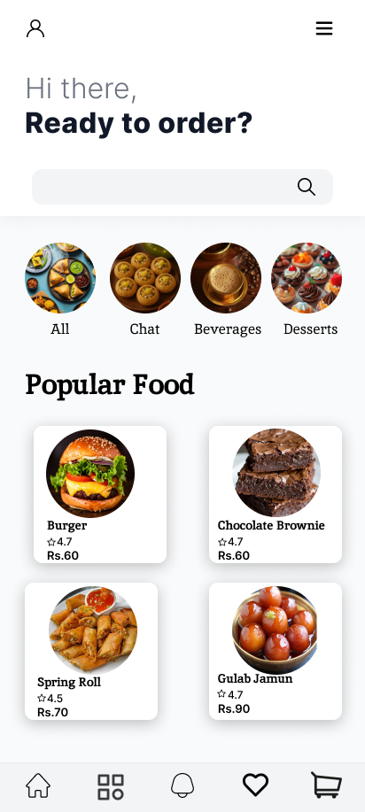
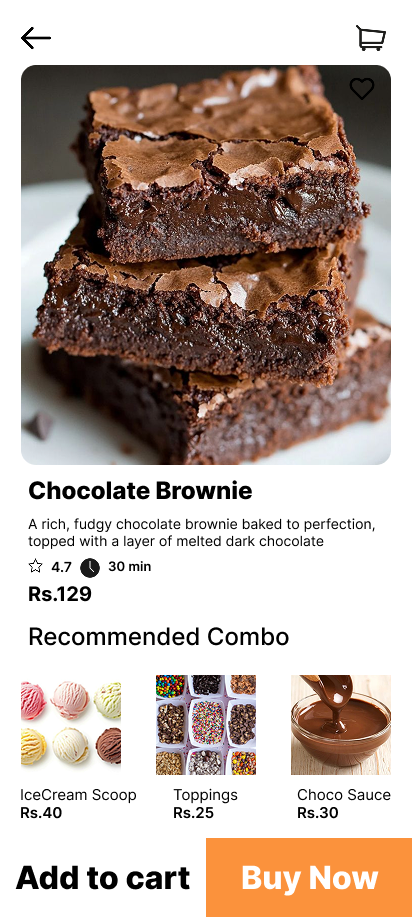
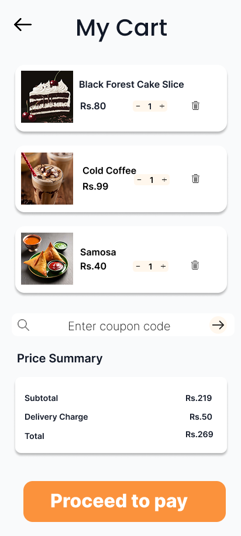
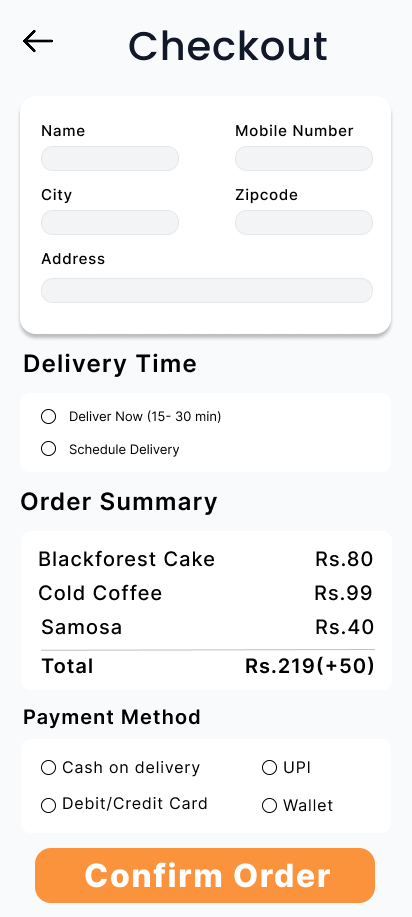
Users find it difficult to browse and order sweets online due to cluttered layouts, lack of clear categories, and a confusing checkout process.
Designed a clean and visually appealing sweet shop experience that makes browsing easy, highlights products, and simplifies ordering.
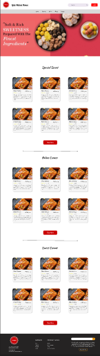
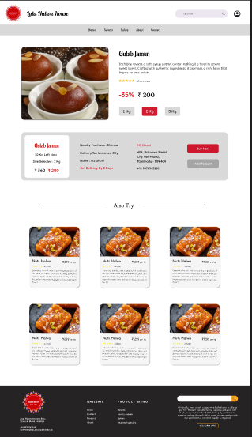
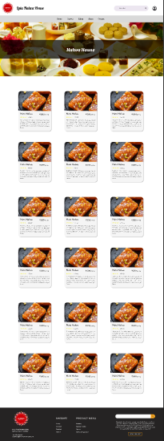
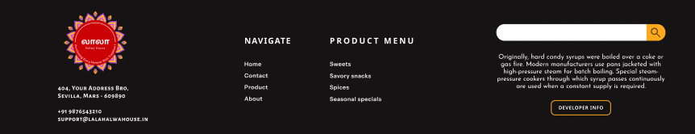
To understand and replicate real world user interface.
Improve user experience by redesigning key flows like checkout and search.
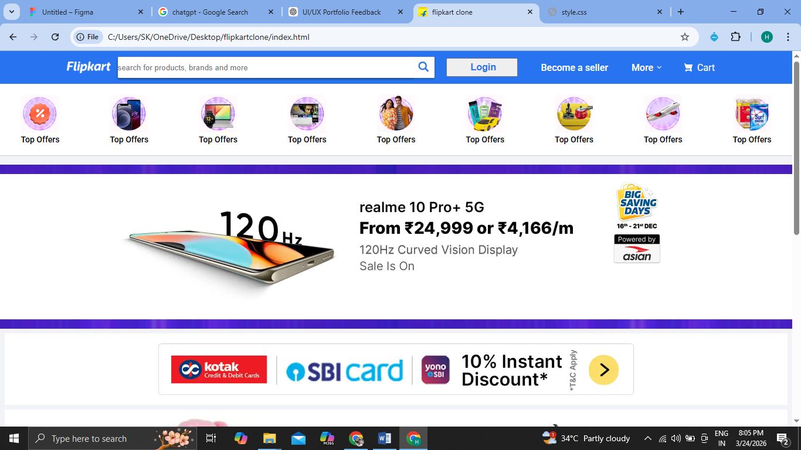
Monitoring marine ecosystem health is challenging due to the vast ocean environment and the difficulty of manually identifying underwater changes and marine species.
Built an AI-based solution using Tiny U-Net and YOLO to enable real-time marine ecosystem monitoring, reducing manual effort and improving detection accuracy.
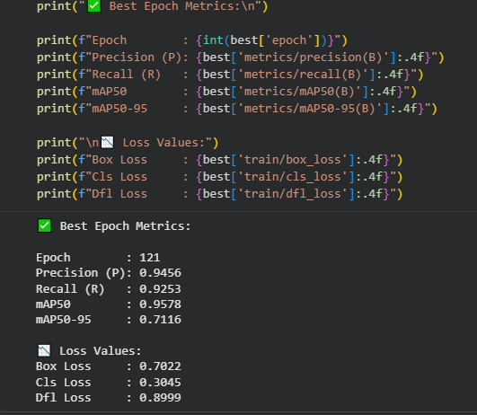
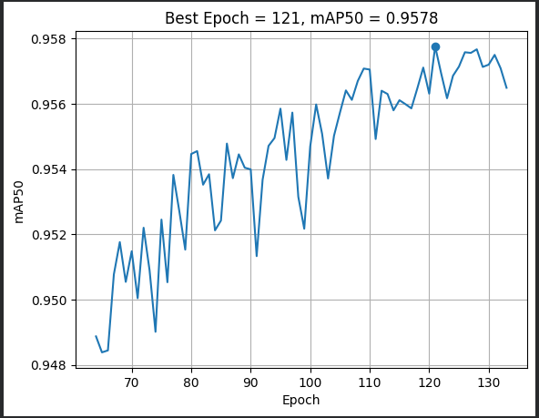
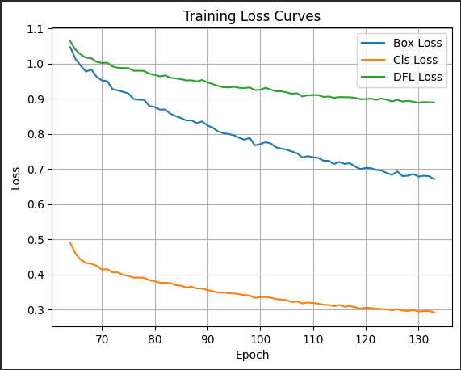
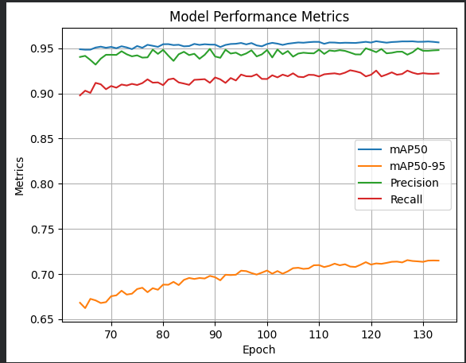
Design Tools
Wireframing & Prototyping
Programming Languages
Web Technologies
Let’s design meaningful experiences together.
Email: harini837847@gmail.com